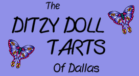
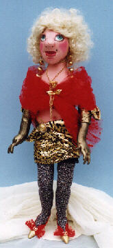
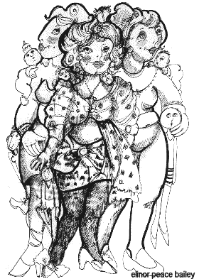

A cloth doll club with an attitude.....
The Ditzy Doll Tarts Cloth Doll Club was born in
January of 1993 when the seven original members decided to meet to share their passion
for cloth dolls. Their goal was to inspire each other through sharing and
friendship via a common bond......the love of cloth dolls and their addiction
to fabric and all things textile-related. The club membership has grown from seven
members to forty since then.
Many of us understand the therapeutic value of creating dolls; some of us
make dolls for the sheer love of the creation process, but we all agree
that being a part of this warm, caring and sharing group feeds the
heart and soul in a special way. It's a wonderful bond.
Have you seen our wonderful logo? We're proud to show you the
original artwork provided to us by elinor peace bailey......

Earlier this year, the club held a competition to decide on a mascot doll
which would best represent the club. This friendly competition came to be
thanks to elinor peace bailey who made us the generous offer of supplying the
original artwork for our logo. The chosen doll was to be sent to California
for a portrait session with the cloth diva herself! Anne-Marie Brombal's
"Sylvie" (above) was voted the "Ditziest" (and perhaps the "tartiest", if not the "trashiest"),
and made the winter flight to California, returning to Dallas with the drawing in hand.
Since then, we have had the logo transferred to our wonderful bright yellow carry bags,
and we're using it on our stationery. We are most honored that elinor saw fit to provide
us with this wonderful artwork, which we treasure. Are we spoiled or what???
It takes all kinds......
Our members range from beginner to professional, timid to boisterous,
normal to ditzy. Over the years, our enthusiasm and combined talent has
been responsible for many meetings, demonstrations, workshops and showings,
the most recent of which was the Dallas Quilt Show in March, 1999. Our
members displayed almost 60 dolls at this annual event.....a display
which delighted all who saw it, and showcased the incredible talents of our
members. This four-day show is held every year, and surprisingly we've always
behaved well enough to be invited back!
This year, we look forward to spending time in the company of our other doll addict friends,
as well as attending seminars and workshops, some of which are given by our own talented members.
We have a growing library of books, patterns and videos, and have already had a group showing
of the video, "The Doll", with other festivities planned for the coming months. Our regular
meetings are held on the third Saturday and the fourth Thursday of each month at
several locations in the Dallas area. Some of our members come from as far away
as Austin and Oklahoma City, and we have distance members who stay in touch via
our regular newsletter as well as via email.
If would like more information on becoming a local or long-distance member of the Ditzy
Doll Tarts, please contact Anne-Marie Brombal
or Patti van Beek, our club presidents.